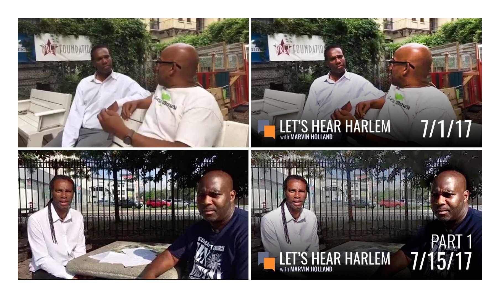
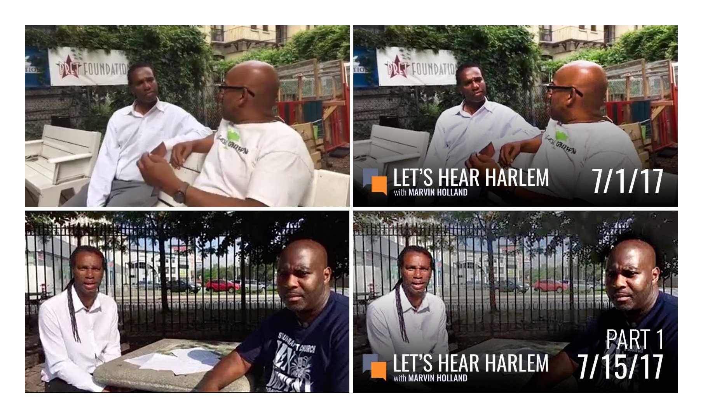
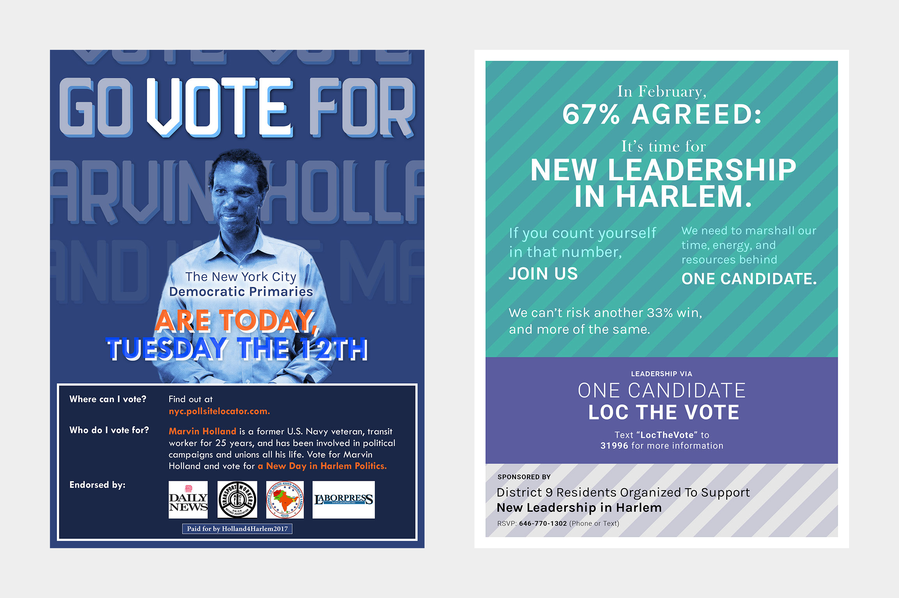
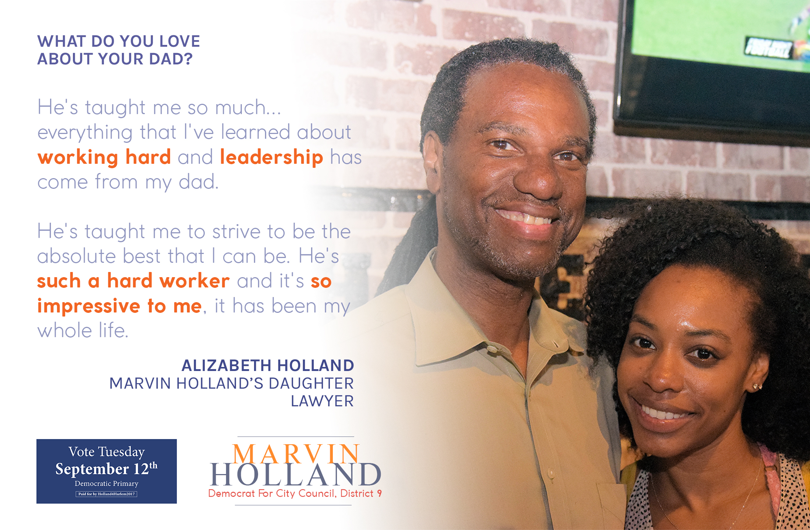
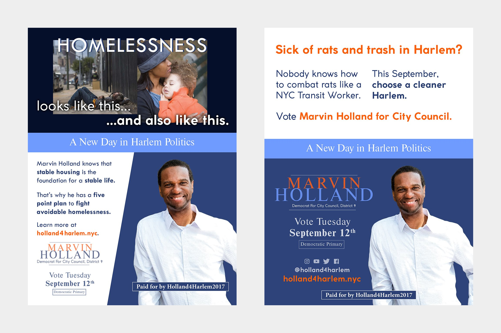
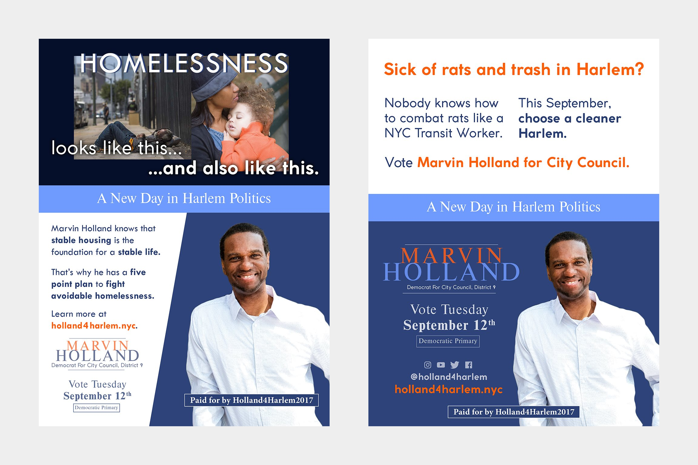

Holland4Harlem
Client: Marvin Holland for City Council 2017
Role: Freelance Graphic Designer

Marvin Holland is a U.S. Navy Veteran and former Transit Workers Union director that made a bid for NYC’s District 9 City Council seat in the 2017 election season. I joined the Holland4Harlem campaign as a social media intern helping with the YouTube page at first, then took on a graphic designer role, working closely with the campaign manager and social media team to create and refresh branding, posters, and animations. This case study showcases some of the work I did.
Below: Branding refresh and application. Full case for Let's Hear Harlem logo redesign on Behance

 

Below: Various posters made for the campaign distributed across social media and print (copy by social media team and District 9 Residents Organized to Support Leadership via One Candidate).
  

Below: Animation made for District 9 Residents Organized to Support Leadership via One Candidate. Copy by aforementioned organization.
The team worked extremely hard through the months-long campaign, but in the end Marvin Holland lost the September 12th democratic primaries to incumbent Bill Perkins, finishing as the second most popular candidate ahead of Cordell Cleare, Tyson-Lord Gray, Marvin Spruill, and Julius Tajiddin. Still, working alongside such a dedicated and hardworking team and seeing effort translate into results in votes was an extremely rewarding and valuable experience and I’m extremely grateful to the H4H team for giving me this opportunity.